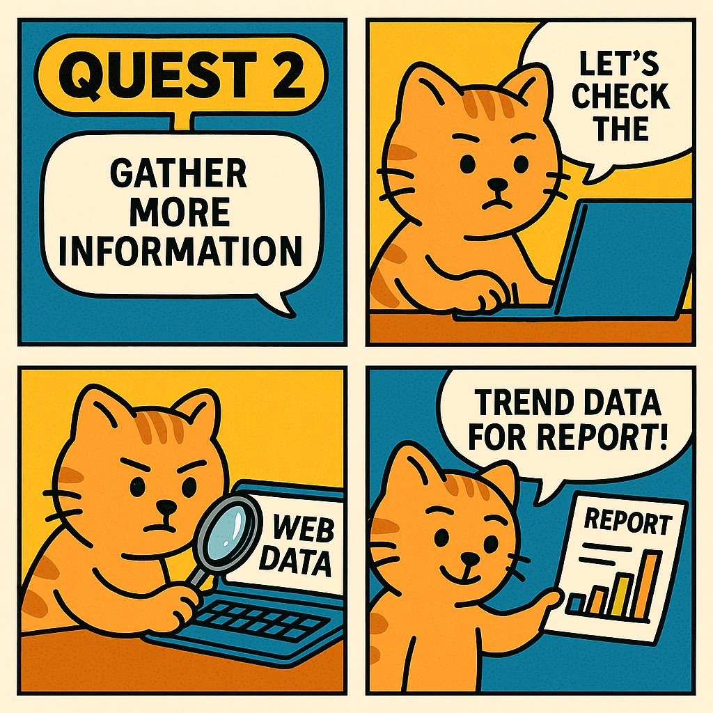

I also want to know the latest information that is not in the report!
In this quest, we will check additional data and organize what we have collected to create a draft report.

- Continue by entering the sample prompts below. Modify the parts in [square brackets] as you like.
- Creatively change the [bracketed] content and regenerate until you are satisfied.
🚩 Checking Web Information
Use web data to check the latest information and collect additional data.
[Sample Prompt]
Based on web data, list and summarize the key food and dining industry issues from 2020 to 2023 by year.
Also predict potential 2026 keywords. For each keyword, suggest possible marketing strategies and representative success cases.
🚩 Organizing in Report Form
Summarize and organize the information collected.
[Sample Prompt]
Combine all the responses so far and create a draft report on [topic] that can be shared with my team.
Tip You can select "Edit in Pages" for the responses to turn them into a document.